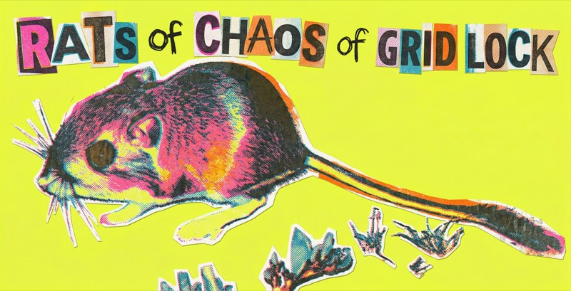
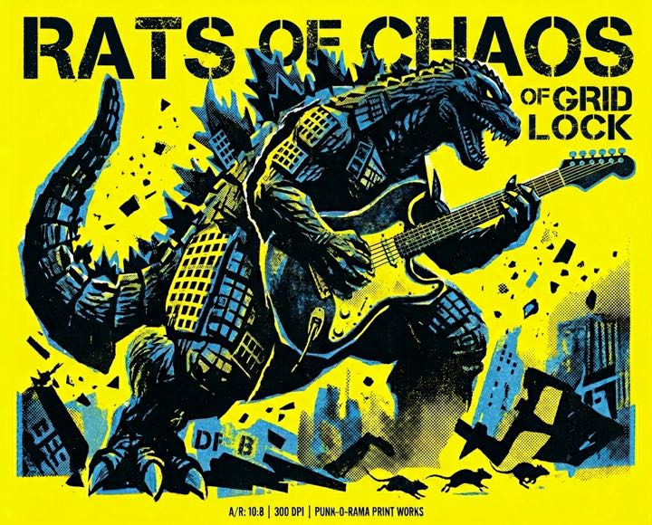

Song A first complete project
Begin now. Learn the ending early.
One scale, five shapes, whole neck

There's far more here than anyone should try to absorb at once. This is the order to take it in. Each stage has one job and a test you can actually fail — don't move on until you pass it. The timings are indicative; the tests aren't.
The single most common mistake is treating soloing as a scale problem. It isn't. It's a rhythm-and-phrasing problem played with scale notes, which is why stages 1 and 3 matter more than everything after them.
Two things to do with your guitar plugged in (or near the microphone). Tune before every session: a guitar slightly out of tune makes every bend and chord sound wrong, and you learn to hear it as normal. Then check your bends: your ear can't judge a bend while your hands are busy making it. Both use the input chosen under Recording & input; nothing is recorded or kept.
Tune up to a note, not down: if a string is sharp, go below it and come back up, so the string settles against the peg and stays in tune. Within 5 cents is in tune.
The missing piece is almost always this: the scale comes from the song, not from the guitar. You don't decide to play A minor pentatonic — the song decides, and your job is to find out what it already chose. Here's the whole procedure.
Melody is a shape over time. Scale playing is a sequence of notes. These four things convert one into the other.
Select one or more boxes to practise moving between them. Tap a selected box again to remove it. Start slowly: play a short phrase in one box, pause, find the root in the next box, then move.
Use the pentatonic boxes you know as landmarks for a new sound. Work with one short phrase before exploring the whole scale.
Pink = root; blue = shared 4, 5 and ♭7; gold = ♭2, 3 and ♭6. These diagrams show only Phrygian dominant notes. The minor third is omitted. Tap notes to hear them; use Dots for names or degrees. These are fret windows, not fixed fingerings: shift rather than force a stretch. Your original reference reaches fret 25; the interactive diagrams stop at fret 24. Use Octave down to explore a lower position.
Retune, make a chord, play an answer. These diagrams use the named tuning; the rest of the app stays in standard tuning.
Sources: Fender's setup guides to Open D, Open E and Drop D tuning; Rocksmith's guide to Open G.
Pick the shapes you're working on, then build a run inside them. Tap any note on the zone map to add it — you'll hear it as you go — and the run below records the order, the tab and the fingering. Play it back at the tempo on the slider above.
Every box overlaps the next by exactly one note per string: the higher note of a box is the lower note of the box above it. Those gold notes are your doors.
You don't need five shapes to cover the neck. Box 1 and Box 4 are the two landmarks — between them they give you a root under the index finger in two different places, and almost everything most players do lives in one or the other.
Learn these two cold and treat 2, 3 and 5 as the connective tissue between them.
The same five shapes, read from the other end. This is major pentatonic as one diagonal run up the neck, root on the A string: two notes on E, three on A, two on D, three on G, two on B, three on high e. That 2–3–2–3–2–3 alternation is the whole pattern.
Pick a key and the shape keeps its fingering and slides. It carries its own key list, because major keys are spelled with flats where the minor ones are not — D♭ major, not C♯.
The arrows mark the third note on each three-note string — the stretch that moves you up a position.
The G-to-B jump is one fret wider than the others because the B string is tuned a half step tighter. Same reason barre chords bend there.
Relative minor: the same dots played from the sixth degree are the minor pentatonic box in the rest of this desk.
A shape is not a mode. Play these notes over the wrong chord and you will hear the major scale they came from, not the mode you meant. What makes a mode is the harmony underneath it — so start the Root drone in the bar above before you play a single shape here.
Every mode below is drawn from the same root — whichever key is selected at the top. That is deliberate. Comparing D dorian to C major tells you they share notes; it tells you nothing about how dorian sounds. Holding the root still and moving one note does.
Each mode names the one or two notes that separate it from the major or minor scale you already know. Those are drawn gold. Learn to hear those notes and you have learned the mode; the rest of the scale you can already play.
The same five neighbourhoods as the pentatonic boxes, with the rest of the scale filled in around them. You are not learning five new shapes — you are adding two notes to shapes you have.
Every shape in this app moves around the neck without your knowing what a single note is called — which works until someone says “take it from the B”.
Three things, not 144 positions: the open strings (E A D G B e), the seven naturals and where the gaps are, and one octave shape. Five minutes a day, one string, said out loud.
The octave shape carries a note you know into an octave you don't — always the same distance, except across the G and B strings, where it shifts a fret.
A triad is a chord made of three different notes: a root, a 3rd and a 5th. Almost every chord you already play is a triad with some notes doubled.
On guitar, one fret is one step, so you can count a triad's recipe in frets. Start on the root, go up 3 or 4 frets to the 3rd, then 3 or 4 more to the 5th. Those two gaps decide the chord's sound. Choose the chord with the Key menu below, or the Root buttons at the top.
The test: without looking, turn a major grip into minor, then back again, on three different string sets.
A triad is a chord with nothing wasted: three notes — a root, a 3rd and a 5th. Every full chord you know is one of these with notes doubled. Strip those doublings away and a chord becomes small enough to grab anywhere on the neck.
This is the missing step between a power chord and a scale. A power chord has no 3rd, so it is neither major nor minor. A scale is seven notes and easy to wander around in. A triad is the three notes that are the chord — the ones the Blues trainer keeps telling you to aim at.
Take them three strings at a time. That is the whole trick: one small shape on one string set, moved to three places, covers the neck. Then move the set.
Dot labels follow the Dots setting in the toolbar: switch to Intervals to see 1, 3 and 5 instead of note names.
A triad has three notes. An inversion is just a different one of them on the bottom. Picture three cards in a stack: take the bottom card, put it on top, and you have the next inversion.
In a band, the bass player covers the lowest note, so you don't need to think about bass notes yet. Think of inversions as three grips of the same chord, stacked up the neck. The names come later. Choose the chord with the Key menu below, or the Root buttons at the top.
The test: play the three grips of G on the top strings with your eyes closed, then find the same three for C.
Forget the word. An inversion is one action on a chord you already know: take the bottom note and move it to the top. Press the button below and watch it happen — three presses bring it back where it started.
Nothing added, nothing removed: same chord, same three notes, stacked in a different order.
Now on the guitar. The same three stacks as three shapes you can hold. The bottom note of each diagram is the bottom note of each stack above — the only thing that differs.
Two chords is enough to feel it. Play the first. Then the second the way you already know it — notice the jump. Then the third card, the same chord inverted: no jump at all.
Three shapes, then they repeat. Root, first, second, root an octave up — one cycle covering the whole neck. See it and you stop learning positions.
The payoff, measured. What that does for one change, inversions do for a whole song. Below, the same progression twice on one neck — every chord in root position, then each taking its nearest shape — with the distance measured.
A caution: the lowest note is only the bass if nobody else is playing one. Alone, your C/E is an inversion; over a bass player holding the root, it is a texture and the chord still sounds like C.
Every key at once. Blue = Box 1, gold = Box 4, pink rings are roots. Labels under each zone read shape · starting fret. Where a shape fits twice on a 22-fret neck it's drawn twice — that's the same shape an octave apart, not a new one.
Notice the pattern: the gold zone is always seven frets right of the blue one, in every key, without exception. That gap never changes — only where the pair sits on the neck.
The pink path is the slide run from Box 1 up into Box 4 — every note of it, with arrows on the two slides. It's the same run in every key; only the fret numbers move.
The faint grey dots are the rest of the scale. There's no empty ground between the two landmarks — Boxes 2 and 3 fill it, and the slide run walks straight through them. Tap any key to load it into the rest of the app.
Not separate scales — small, high-value neighbourhoods carved out of the boxes you already know.
His root sits on the B string under the index finger — that's the anchor the whole box is built around, and it's why you so often saw him planted in one place, barely moving. The box is small on purpose. Nothing is there to run through; every note has to earn its place, so the expression comes from touch, vibrato and the exact timing of a bend rather than from speed.
The theory move that makes it sound like him: he leans on the major 6th — the dashed note above — often in place of the ♭7. That single swap tilts a minor-sounding shape toward major, which is why his playing sounds sweet and vocal rather than dark. Keep the ♭7 as seasoning, not a foundation. One caution: over a genuinely minor blues the 6th clashes, so the sweet note belongs in major/dominant blues.
And the vibrato. His was fast, wide and generated from the wrist, applied to a held note as the destination of a phrase. Practise it alone: one note, thirty seconds, no other notes allowed.
Five notes off the top of Box 2 and almost nothing else — he reused the same small vocabulary constantly. What makes it enormous is the bending. He overbent: not just a whole step, but a step and a half or two full steps, bending one note up to the pitch of a note three or four frets higher, then dropping it in stages rather than releasing cleanly. He also stacked bends — hitting the same fret with a half-step, then a whole step, then further — so one note produced several pitches.
Phrasing tells: he came in late, often on beat two rather than beat one, which gives the lines their slinky, behind-the-beat drag. And he liked resolving to the 5th instead of the root — less final, more suspended.
Worth knowing before you try to match him: he was a left-hander playing a right-handed Flying V flipped over, so the treble strings were nearest the floor and he pulled them downward instead of pushing up. He tuned well below standard, used very light strings, and played with thumb and fingers, no pick. The bends aren't superhuman — the setup was doing a lot of the work. On your SG in standard tuning, a step and a half is a realistic ceiling; go for the sound of the phrasing, not the exact interval.
Listen first. B.B.: Live at the Regal (1965) — the whole record is the box in action. Albert: Born Under a Bad Sign (1967), and Blues Power from Live Wire/Blues Power for the bending at full stretch.
B.B. box lessons
Guitar World — the movable B.B. box
Premier Guitar — Deep Blues, with notation and a backing track
Happy Bluesman — what it is and how to use it
Active Melody — his approach to a solo
Albert King lessons
Happy Bluesman — the Albert King box
Happy Bluesman — bend stacking
Guitar World — Jared James Nichols on Albert's fingerstyle
Riff Journal — his upside-down setup and bending technique
One chord, five places. CAGED is the map that joins the chords you know to the scale shapes you know: choose a root above, then major or minor, and read the neck from left to right.
Two notes, no third, movable anywhere. The chords under a riff and the pentatonic scale over it are built from the same handful of notes — this is the rhythm side of everything else in here.
How the pieces get ordered. Block width is bar count, so the shapes below are to scale.
Numbers are playing order. b bend, r release, / slide, ~ vibrato.
There is also a longer written lesson on seven Box 1 licks in A minor: open the Seven Licks lesson.
There is only one connection rule, repeated four times: on every string, the upper note of a box is the lower note of the box above it. Work these four drills in order — each one is a prerequisite for the next.
Two timed routines from your practice guide, then the generators and tools.
Pick two chords. For one minute, switch between them as cleanly as you can, strumming once on each, and count each change (tap the button or press Space). Most of the difficulty in songs is the change, and this is the fastest way to make it automatic. Do two or three pairs a day; beat your best.
The root plays, then one note of the scale. Name its degree by ear, then play it on your guitar.
Say the shape's name out loud before you play it, and record one take at the end.
Choose one drill. The timer keeps the session focused and sounds a cue when time is up.
Run the metronome at the current tempo, then add 5 bpm after each clean round. Mark a miss to drop 5 bpm and rebuild.
Only completed generated sessions are recorded. Nothing leaves your browser.
Practice is not the score at the end of a repetition. Learning is what returns after a gap, in a new key, at a new starting point, or inside a complete song. This section turns the research behind the practice guide into decisions you can make at the guitar.
Map every section and the ending. Build a simplified complete form before polishing details.
Begin now. Learn the ending early.
Add B when A is continuous; keep A in rotation.
Confirm all five in two full takes on separate practice days. A labelled simplified arrangement counts.
Lead follows the song. Check the key and chords before adding a scale.
Strong learning principle
Fluency during a session can be temporary. Begin with one unassisted attempt, work on the smallest failed part, then test the same target on another day. Keep the tempo and passage fixed so the comparison means something.
Use it: record a cold Box 1 → Box 2 crossing before looking at the diagram.
Music experiment
Set one precise goal, make an attempt, compare the result with the goal, and write one next action. A small randomized study with collegiate wind players supports this self-regulation loop; it does not establish an ideal session length for guitar.
Use it: “land the bend in tune” → record → “slow the approach, keep the target.”
Additional music evidence
Before playing, imagine or sing the phrase with its timing, tone and ending. While playing, attend to that intended sound rather than issuing instructions to each finger. A seven-player natural-trumpet study found better accuracy with this approach, but the sample was small and the result needs broader replication.
Use it: sing a two-bar answer, gesture its contour, then find it on the neck.
Context-dependent
Use a short block to make an unfamiliar movement workable. Then rotate among a few related tasks or change one condition: key, tempo, starting string, or musical context. General motor research favours random practice for transfer, but applied effects are smaller and music studies are mixed—so random switching is not a universal rule.
Use it: four clean Box 1 crossings, then alternate Box 1, Box 2 and a song phrase.
Additional music evidence
Hewitt (2001) compared junior-high band students who did or did not listen to a model, and did or did not evaluate their own recorded playing. Those who listened to a model while evaluating themselves improved more in tone, melodic and rhythmic accuracy, interpretation and overall performance; a model on its own made no difference, and intonation, technique and tempo did not improve more. It was 82 students on band instruments, so it is indirect evidence for guitar, but it is the reason this desk asks you to record, rate and re-rate a take rather than only play.
Use it: hear the model, record a take, rate it against one focus, then listen and rate again two days later.
Additional music evidence
Piano studies found accuracy or some kinds of musical knowledge improved across intervals containing sleep. Sleep did not improve every measure, so treat it as a reason to stop a good session and retest—not as a substitute for practice.
Use it: end with three accurate slow passes; retest cold the next day before adding speed.
Useful caution
Brief rests can reduce fatigue and give you a moment to hear the next phrase. Recent motor-sequence experiments challenge the claim that gains after ten-second breaks prove rapid offline learning. Take breaks to reset attention and tension; judge learning with a later test.
Use it: stop when timing or tension degrades, breathe, audiate once, then resume.
The studies do not prescribe a perfect BPM ladder, a universal number of repetitions, or this desk’s 25-minute routine. Most music studies are small and many motor-learning studies use simple laboratory sequences rather than guitar performance. Use the principles as experiments: define a target, compare recordings after a gap, and keep the version that transfers into music.
Focused research update checked 17 September 2026; not a systematic review. The guitar program this desk was designed from remains the design reference. Claims above distinguish direct music evidence from broader motor-learning evidence.
Learn the whole song, then spend time on the part that needs it. Import an audio file you own; it stays in this browser on this device.
Enter the chords, then in any view turn Chord tones to Follow backing: the notes of each chord light up as the song plays, and the key buttons choose the pentatonic box for your solo.
Speed changes keep the pitch. Save tempo and downbeat changes before playing. Start the song, then use Record in the Play along bar. A–B practice loops use the browser player and may have a small gap.
Import an MP3, M4A or WAV to begin.
Play a chord part for 1, 2, 4, 8 or 12 bars at the tempo in the Play along bar. It repeats on the audio clock with no gap, so you can solo over your own playing. Press Record in the Play along bar (Guitar + backing) to record your solo with the loop, or just practise over it. Your latency calibration puts the loop back on the beat you played to.
Enter the loop's chords and, with Chord tones on Follow backing in any view, the notes of each chord light up as the loop plays.
Every take you record is kept here with its rating. Rate it against your one focus, come back two days later, listen with fresh ears and rate it again: the two ratings sit side by side.

Hear where you are in the form. The current bar and chord move with the groove; aim each phrase toward the highlighted chord tone, then leave space for the form to answer.
Bars 1–4 establish home, bars 5–6 move to IV, and bar 9 begins the turnaround. Start with one note per bar. Later, approach the target from one scale tone above or below.
A bar showing two chords changes halfway through — the second chord arrives on beat 3. Every form here is a standard skeleton; recordings of the same tune often differ, and players substitute freely.
Rhythm first, pitch second. Clap the pattern, play it on one root, then keep the rhythm unchanged while choosing notes from the current box.